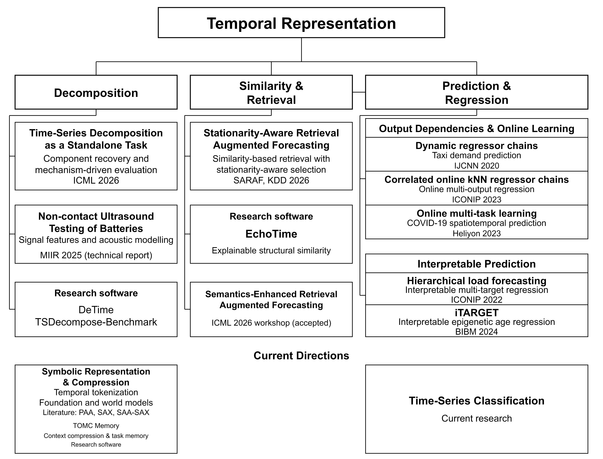

Zipeng Wu
Temporal representation for time series and sequential data.
University of Birmingham
About me
I am a PhD researcher in Applied Mathematics at the University of Birmingham. My research focuses on temporal representation: how to represent temporal structure and use it to compare time series, predict future values, and classify sequences.
I study time series under non-stationarity, with work on decomposition, similarity, and retrieval-augmented forecasting. My current interests also include symbolic representation and temporal tokenization for foundation and world models, including action histories, VLA trajectories, and model rollouts.
I develop DeTime: time-series decomposition in Python, an open-source toolkit for extracting trend, seasonal or oscillatory components, and residuals through a shared Python and command-line interface. The package is available as detime-toolkit on PyPI.
I am also interested in sequence compression and symbolic representation: how compact representations retain information needed for a task. My recent work on TOMC Memory explores this question for long conversational histories, drawing inspiration from time-series representations.
Research directions
- Decomposition: temporal component recovery, decomposition evaluation, and signal feature extraction.
- Similarity and retrieval: structural comparison and stationarity-aware retrieval for forecasting.
- Prediction and regression: output dependencies, online learning, hierarchical forecasting, and interpretable grouped regression.
- Current directions: time-series classification, sequence compression and symbolic representation, and temporal tokenization for foundation and world models. TOMC Memory is a recent exploration of compact representations for conversational histories.
Temporal Representation
The map groups my work under three research themes, under the higher-level theme of temporal representation. Current directions appear below. Accepted semantics-enhanced forecasting work belongs to Similarity and Retrieval. TOMC Memory belongs within symbolic representation and compression.

Recent work & news
| WISP: Composable Representations for Wrist-Worn Activity Recognition. First-author preprint. WISP code · WristHARBench benchmark · English video · 中文视频. | |
| TOMC Memory: Task-Oriented Memory Compilation. Recent work on compact representations of conversational histories, with CPU-based context preparation and explicitly saved task notes. Official GitHub. | |
| Jul 2026 | UKRI/AIRR Gateway Project Language-Action Time-Series Tokenization for Efficient VLA Policies allocated 10,000 GPUHR on Isambard-AI, with nominal compute-resource value GBP 45,000; compute resources only, not direct cash funding. |
| Jun 2026 | UKRI/AIRR Gateway Project Time Series Language and Foundation Model allocated 10,000 GPUHR on Isambard-AI, with nominal compute-resource value GBP 45,000; compute resources only, not direct cash funding. |
| Jun 2026 | Co-authored paper accepted to KDD 2026, CORE/ICORE A*. |
| May 2026 | First-author paper accepted to ICML 2026, CORE/ICORE A*. |